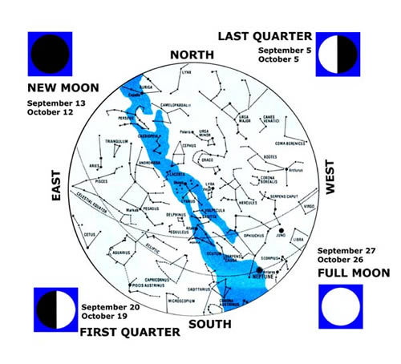
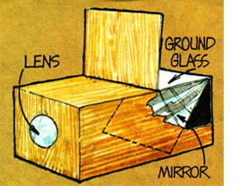
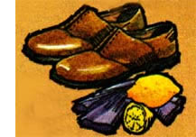
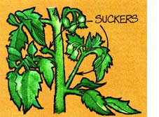
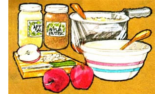
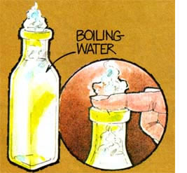
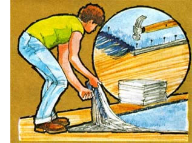

This may be the first generation to set foot on the moon and shoot rocket probes into the reaches of outer space. But, man for man and woman for woman, great granddad and great grandmother-or, for that matter, almost any primitive tribe of almost any past ageknew a lot more about identifying the stars and planets in the night sky than most of us currently do.
And so, with the help of Guy Ottewell (author of Astronomical Calendar 1977, available for $4.95 from the Department of Physics, Furman University, Greenville, South Carolina 29613), MOTHER is going to try to change all that. The foldouts in Issue Nos. 43 through 48 are being printed in the form of an old-time almanac and star chart. Save the series. Practice with it (directions for using the maps appear in MOTHER NO. 43). And, if you're a typical child of our modern TV-dominated society, you should know one heck of a lot more about the heavens by the end of 1977 than you did at the beginning.
4 Mars passes north of Jupiter in the early morning sky.
7 The moon crosses south of Jupiter and Mars before sunrise . . . four days later, it passes below Venus and Saturn.
15 The sun enters Virgo.
21 Mercury is at its best for viewing in the morning because it stands steeply above the sun as the two rise.
22 The fall or autumnal equinox occurs when earth's north and south poles are equidistant from the sun. In our Northern Hemisphere, nights now start to become longer than days and autumn officially begins . . . south of the equator the opposite occurs as spring commences.
23 The sun enters the astrological sign Libra.
27 If conditions are good, you might be able to see a penumbral eclipse of the moon as it passes through the upper edge of the earth's shadow around 4:30 a.m. EDT.
9 The Draconid meteors have, at times, bet. spectacular. If visible this year, they'll come from the head of Draco throughout the night.
12 A partial eclipse of the sun can be seen in North America (4 p.m. EDT). The further north you live, however, the smaller the "bite" from the sun will be.
20 The Orionid meteors are a very good shower "left over" from Halley's Comet. Numbers in crease beginning at 9 p.m. and peak around 4 a.m. Rate: perhaps 40 per hour.
23 The sun enters the astrological sign Scorpio.
30 The sun enters Libra. In the U.S., change clocks back one hour from Daylight Saving Time to Standard Time in appropriate areas of the country.
31 Halloween is the last of the four Cross-Quarter 5 Days, which some people consider the actual , boundaries of the seasons.
The other dates are: Groundhog Day (February 2), May Day (May 1), and Lammas (August 1).
It's little wonder that early man looked at the two largest and brightest objects in our sky-the moon and the sun-with awe. The events associated with these bodies are really quite impressive . . . even for those of us who now have a more scientific understanding of them.
The phases of the moon, for instance, are actually determined by that satellite's very orderly circling of the earth . . . a cycle which requires about 29-1/2 of our days. The moon "shines" by reflecting sunlight, so only the hemisphere of the moon that is turned toward the sun is illuminated. We can't see the new moon, then, because it lies in the same direction from the earth as the sun, and its "back", or dark half, faces us. As it orbits the earth (that is, moves eastward about 12° per day), more and more of the illuminated side of the moon is exposed to our view untilhalfway through its revolution around our planet-we can see the full face of this, the earth's only large satellite.
Because the moon's plane of orbit is tilted about 5° from the ecliptic (the apparent path of the sun across the sky), eclipses can occur only when these two paths intersect and the sun and the moon come into exact alignment with the earth (as they do during this time of the year).
During a solar eclipse, the moon passes directly between the earth and the sun, casting its shadow towards us. If the moon is close enough to the earth, a total eclipse of the sun can be viewed where the moon's cone-shaped shadow touches the planet (a moving spot never more than 200 miles across) and a partial eclipse can be observed at other points (see October 12). When the tip of the moon's shadow does not quite reach the earth, however, an annular eclipse takes place . . . that is, at its peak, observers directly in the path of the shadow will see a ring of sunlight surrounding the darkened moon. (One important note: When looking directly at the sun, even during an eclipse, always protect your eyes with filters that have been approved for this purpose!)
In a lunar eclipse, the relationship of the bodies is reversed: The moon passes through the earth's shadow while on the "outside" (away from the sun) portion of its orbit. Our planet's satellite, however, is not always completely hidden during a lunar eclipse . . . it often turns a coppery color when shaded from the direct rays of the sun but is still illuminated by refracted sunlight passing through the earth's atmosphere.
Another interesting event that puzzles man even to this day is the appearance of sunspots. These dark areas on the sun's face can number from just a few a year to around 150 per day, and seem to follow an 11year cycle. Surprisingly, these "dark" spots are exceedingly bright and appear dark only in contrast with the remaining and still-lighter face of the sun. They move across the sun's surface because of its rotation. and have shown us that the sun is not a rigid bode. Areas near Ole Sol's equator rotate faster (24-1/2 earth days per revolution) than regions closer to the poles(a 31-earth-day period at 60o latitude
Fall is definitely the most colorful season o the year, which makes it an ideal time to put together a simple camera obscura (a camera for drawing) to aid your children in preserving a bit of nature's beauty.
Round up an old box-or gather together enough lumber to build one-about 18" long, 9" deep, and 12" wide. Fashion a hinged "lid" at one end of the container's top, and paint the box's interior black.
Now cut a hole in the end opposite the lid and fasten a double convex lens (a magnifying glass) into the opening. Then secure a mirror at a 45° angle under the lid. To complete the project, take a small pane of window glass, rub it on one side against a sheet of sandpaper, and fasten the ground glass under the lid in the top.
Adjust the "camera" by simply experimenting with different positions of the looking glass. When you hit upon the correct angle, you'll be able to point the contraption in any direction and see objects reflected in their natural colors onto the ground glass . . . strongly enough to be accurately traced on drafting paper.
The crops are in, the larder's full, and you want to dress up a little for that long-awaited trip to town . . . but you find that the shoe polish is down to a few dried up bits rattling around in the bottom of the tin. Fake it.
Take a piece of cut lemon and rub the leather all over. Finish off with a soft cloth, just as if you'd used polish.
They'll never know the difference on Main Street.
On a cold autumn evening, it somehow just seems natural to sit down in front of the fire with a huge bowl of popcorn. But occasionally-no matter what tricks you try-the fluffy snack you anticipated turns out to be a hard-kerneled disaster. What to do?
Few people realize that popcorn pops because each kernel contains a minute amount of water. When the grains are heated, this moisture turns to steam and the resulting miniexplosions split the kernels open.
It follows, then, that popcorn-if not stored in a sealed container-can become too dry to do its thing. The next time you find yourself up against this situation, soak the grain in cold water for fifteen minutes, drain it, and then try to pop the corn again. You should be pleased with the results.
Tomatoes-whether whole, juiced, or made into a paste or ketchup-are one of the indispensable staples for many cooks, so any scheme for lengthening the fruit's harvest is worth looking into.
Dick Raymond (author of Down-to-Earth Vegetable Gardening Know-How, $5.95 from Garden Way Publishing, Charlotte, Vt. 05445, or Mother's Bookshelf) suggests that instead of removing all of the suckers from your tomato plants this year, you could allow a few to grow to the size of your little finger and produce a bud. Then cut off the sucker, trim away all the leaves up to the bud, set the stem in water for four hours, and "plant" the cutting. Be sure to water it well for two to three days . . . and within a few weeks you'll be harvesting wonderful fruit.
By frost, these late-started plants will produce large, top-quality green tomatoes (better than fruits from vines that have been bearing all summer) that you can pick and put in your cellar to ripen. Just store 'em in a dark place so they'll mature evenly.
Or if you have room indoors, try rooting the cuttings in four-quart pots. When kept in a sunny spot, these plants can provide you with fresh tomatoes well into the winter!
Apples are the most widely cultivated-and, no doubt, the most versatile (for cooks)-fruit grown in the temperate climates of the world. For a tasty change in "puttin' up" the harvest this season, though, try at least one batch of Nancy Cosper's s apple sauce and apple butter recipe (taken from You Can Con With Honey, $1.50 from Nancy Cosper, Horse Creek Rd., McKenzie Bridge, Ore. 97401) sweetened with honey and molasses!
Simply wash, peel (if desired), and chop eight to ten pounds of apples into a kettle. Add 1 cup of water to prevent scorching, then cover the pot and cook until the juices es are released.
Next, remove the lid, simmer the fruit till it's thickened, and stir in: Ito 1-1/2 cups honey, 1 tablespoon cinnamon, 1 `teaspoon nutmeg, and 1/2 teaspoon ground cloves. When the mixture reaches the desired consistency (either slightly chunky or smooth), spoon off two pints of apple sauce and seal in hot, sterile jars.
Then, to make apple butter, simply combine 1/4 cup molasses, 1/2 teaspoon allspice, and 1/4 teaspoon ginger with the remaining sauce. Cook until very thick and smooth . . . and seal in two more pint jars. Delicious!
We all know that we should have a fire extinguisher or two in the kitchen, another in the car, and yet others within handy reach in the shop, barn, etc. Few of us do because . . . well, the dang things are too big and bulky . . . and they have to be recharged . . . and they cost too much.
OK. Right now, today,, you're going to go out and buy a whole half dozen compact, low-cost, everready fire extinguishers. They'll weigh one pound each (so they're not too large), they'll never have to be recharged (so there's no objection there), and they'll cost a grand total of less than $3.00 (you can panhandle that much in an hour, for crying out loud).
Talking 'bout-are you ready?-baking soda. Good . . . old ... baking soda . . . in onepound cardboard boxes. It'll set you back no more than fifty cents a container and each carton contains enough powder to douse almost
any young fire you're ever likely to encounter in the kitchen, basement, home shop, or automobile. How? By generating flame-snuffing carbon dioxide when sprinkled on a blaze.
To prevent moisture from caking the soda over the years (and to keep the weak-willed at your house from using the contents of the fire extinguishers for other purposes), protect each box of the powder in a tightly sealed, double wrap of aluminum foil. Then glue a band of red paper around every package or clearly label the foil on the individual boxes (with something like a magic marker) "FOR FIRE ONLY".
Put one of the soda containers in the kitchen, another in the bedroom, a third in the basement, a fourth in your home workshop, a fifth in the car glove compartment, and carry the sixth on your tractor (or put it in the baby's room, near the heat lamps in the barn during spring farrowing, in the chicken house next to the brooder stove, etc.).
At the first sign of fire, grab the nearest box of soda, tear off the protective foil, and sprinkle the powder over the blaze. It won't take much, so spread the soda thin. As the powder hits the flames, it'll produce a dense cloud of carbon dioxide that will quickly extinguish grease, electrical, and most other kinds of fire . . . all for fifty-five cents (counting foil) or less a shot.
No matter how careful you are around the homestead, there seem to be about a thousand ways to pick up splinters . . . so it's good to know that there's more than one way to get them out. Here's a less painful alternative to digging at your skin with a needle or knife point (which is never much fun, even if there's a friend around to admire your Great Surgeon act).
For clean, easy extraction of slivers-according to at least one old-time source-fill a heavy-duty bottle almost to the top with boiling water, place the injured spot over the mouth of the container, and press down tightly. The pushing should force the flesh back from that troublesome bit of wood, andwith luck-the heat will draw it out.
Last year, many folks spent an uncomfortableand extremely expensive-winter because they were caught off guard by the severe temperatures. Before this cold season sets in, why not prepare to cut the heat loss in your own home by up to 15 or 20 percent-as well as increase the comfort of your house at the same indoor temperature-by taking a few simple and relatively inexpensive measures to reduce drafts?
· Either affix purchased weatherstripping--or make your own draft excluders by tacking up strips of feltover all the cracks between doors and windows and the frames which surround them. At the least, close some folded newspaper or cloth into the top and bottom cracks of each window.
· Fill all holes around window frames, door frames, and chimneys with caulking. Nail thin laths of wood to door frames to cover larger gaps.
· Install storm windows. Even plasticthough it wears out quickly-provides good insulation. (For an airtight seal, roll the edges under several times and tack through the roll.)
· Place masking tape around windows that are going to be closed all winter.
· Hang heavy curtains over windows and all glass doors.
· Keep a "floor dog" (the stuffed sleeve of an old coat is effective) pushed tightly against the base of all outside doors.
· Block off all unused fireplaces, and position a temporary cover in front of the others when they're not in use.
· Seal all holes in walls, especially those around pipes, attic doors, etc. Gaps around baseboards can be filled with papier-mache and stained or painted to match the wood.
· Cover gaping floorboards with carpeting or linoleum to seal off drafts. Several thicknesses of newspaper laid under the covering increase effectiveness.
· If your home has an open foundation, enclose it. Old sacks filled with dirt and leaves are good to stack in front of small openings to block the wind.
|
 |
 |
 |
|
 |
 |
 |
|
 |
|
|